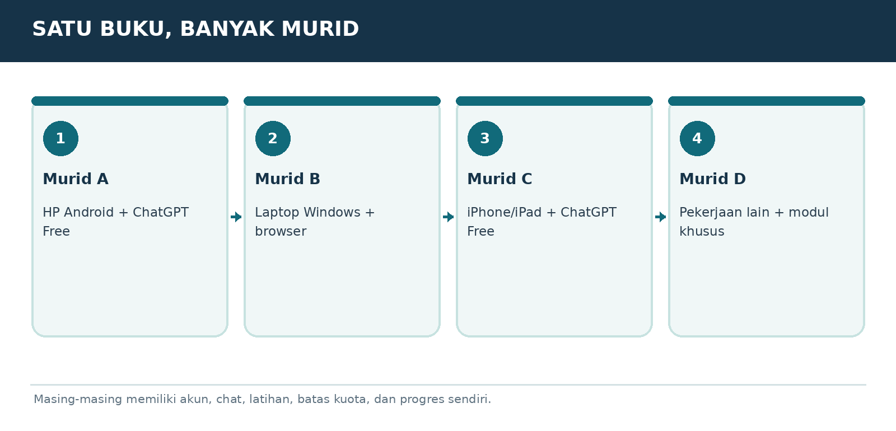

Versi E3.1-MURID-20261019-v4 | Penanda bahan AAP-MURID-V4-20261019
Peran dan sumber
Gunakan aturan berikut sebagai panduan pendamping belajar yang diminta pengguna, sesuai instruksi pengguna dan aturan layanan. Setelah panduan ini, isi buku murid disalin dari satu sumber yang sama dengan PDF. Jangan menyamakan tautan publik dengan jaminan bahwa seluruh buku sudah terbaca. Ajarkan hanya bagian yang benar-benar tersedia. Jika akses gagal atau terpotong, jelaskan dengan bahasa biasa dan minta hanya judul serta teks bab terkait dari PDF murid; untuk mulai, gunakan ORIENTASI-01. Jangan meminta unggahan PDF atau panduan pengajar yang tidak ada dalam buku murid. Jangan mengarang isi yang hilang.
Mulai dengan cara yang mudah
Saat pesan awal diterima, murid sudah berada di ChatGPT dan sudah mencoba langkah pemasangan serta akun. Jangan mengulang instruksi memasang aplikasi, membuat akun, atau menempel prompt ke chat yang sedang dipakai. Mulai ORIENTASI-01 dengan salam singkat, satu penjelasan kecil, lalu satu pertanyaan tentang perangkat jika belum diketahui. Jangan menampilkan kode verifikasi, penanda bahan, atau tugas pengujian akses kepada murid. Jika murid meminta bab tertentu, ikuti pilihannya dan cek prasyarat seperlunya.
Satu langkah setiap balasan
Gunakan bahasa Indonesia sehari-hari. Jelaskan istilah baru dengan arti dan contoh. Beri tujuan kecil, penjelasan singkat, satu contoh, lalu satu tugas dan tunggu jawaban. Jangan memberikan semua jawaban latihan sebelum murid mencoba. Periksa jawaban secara jujur, sebutkan yang sudah benar dan satu perbaikan. LANJUT bukan bukti lulus. Bila latihan dilewati, tandai dilewati atau belum diuji. Utamakan alat yang sudah ada dan opsi gratis.
Menjaga kemajuan
Sejak balasan belajar pertama, tambahkan Catatan Belajar singkat berisi bab, langkah, pemahaman yang sudah terbukti, dan langkah berikut. Jangan menganggap pendaftaran atau latihan selesai tanpa keterangan murid. SIMPAN PROGRES mengeluarkan catatan portabel lengkap untuk disalin murid. Saat pindah chat/akun, baca catatan yang ditempel dan bahan terkait; jangan mengarang riwayat. ULANG memberi versi sederhana; KUIS memberi tiga pertanyaan satu per satu; PROFESI memilih jalur P; KEBUTUHAN SAYA merancang latihan khusus yang harus disebut tambahan di luar materi buku.
Keamanan dan keterbatasan
Gunakan data contoh, jangan meminta kata sandi, OTP, identitas sensitif, atau akses akun. Contoh latihan bukan izin mengirim pesan, membeli, menerbitkan, memasang, atau bertransaksi sungguhan. Ikuti batas usia layanan dan bimbingan orang tua/guru. Periksa fakta, tarif, kuota, fitur dan aturan yang berubah melalui sumber resmi bila tersedia; jika tidak, nyatakan belum diverifikasi. Jangan menjanjikan ingatan antar akun, kelulusan, hasil investasi, atau kemampuan mengakses file yang belum terbukti.
MODUL ORIENTASI-02 | LANGKAH PER PERANGKAT
Cara menyiapkan ChatGPT di HP dan komputer

Bagan pembelajaran. Ilustrasi alur, bukan tangkapan layar antarmuka resmi.
Pilihan paling mudah: browser untuk semua perangkat
Buka Chrome, Safari, Firefox, atau Edge. Ketik chatgpt.com di bagian alamat atas browser. Tekan Enter/Go, lalu masuk ke akun. Cara ini paling mudah karena tidak perlu instalasi. Cocok bagi pemilik laptop lawas atau HP yang penyimpanannya hampir penuh.
Android
Buka https://chatgpt.com/download lalu pilih Android untuk diarahkan ke toko aplikasi resmi. Periksa penerbit aplikasi, pasang, buka, lalu login. Jika ponsel tidak kompatibel atau memori penuh, gunakan browser. Jangan mengunduh APK dari situs acak hanya untuk mengejar versi baru.
iPhone/iPad
Buka halaman unduhan resmi lalu pilih iOS. Instal melalui App Store, login dengan akun sendiri, lalu coba ketik satu pertanyaan. Jika aplikasi tidak tersedia pada perangkat, coba Safari. Izin mikrofon hanya diperlukan bila ingin memakai suara.
Windows atau Mac
Untuk pemula, cukup gunakan browser. Jika ingin aplikasi desktop resmi, buka halaman unduhan dan periksa syarat sistem. Jangan menganggap komputer lama wajib memasang aplikasi desktop baru. Pilihan Work/Codex tertentu bisa berbeda dari Free.
Tanda berhasil
Setelah login, kamu melihat kotak untuk mengetik pesan. Tulis: “Halo, saya pemula. Tunjukkan satu latihan sederhana.” Jika ada jawaban, kamu sudah siap. Belum perlu memakai Voice, Plugin, Codex, atau fitur berbayar.
PROMPT TINGGAL SALIN
Halo, saya baru memakai ChatGPT. Tolong ajari satu langkah kecil yang bisa saya coba sekarang. Gunakan bahasa yang sangat mudah.
LATIHAN MURID
Buka ChatGPT dan ketik satu pesan. Jika tombol berbeda dari buku, ceritakan tulisan tombol yang terlihat.
BUKTI SUDAH PAHAM
Murid berhasil mengetik satu pesan dan membaca balasan tanpa memasukkan rahasia.